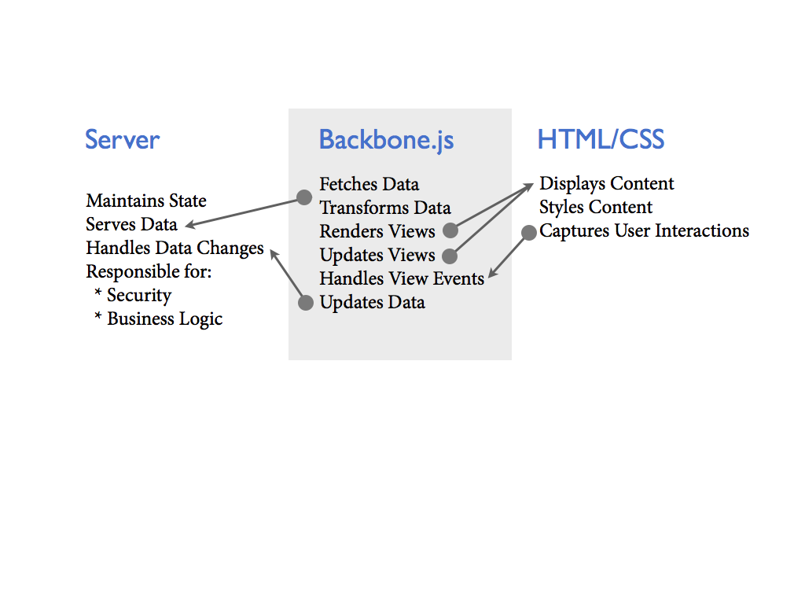

Section #1 - Backbone Philosophy
Bocoup Backbone.js Training
About
Backbone.js is an MVC library that assists with organization and structure of modern web applications.
It has the following dependencies:
- Underscore.js or lodash
- jQuery or zepto.js
Documentation and project information:
Source Code on GitHub:
Community
Backbone.js is in a very unique position of having a thriving community. Where the docs fall short, there is no shortage of answers and community discussion happening in the unofficial and official support channels.
Excellent support resources:
- IRC #documentcloud on irc.freenode.com
- Discussion group http://groups.google.com/group/backbonejs/topics
- Stack Overflow http://stackoverflow.com/questions/tagged/backbone.js
Support is not the only thing excellent about the community; there are numerous contributors to the project as well as plugin creators and excellent posts on how to better use the library.
Today's Javascript Applications
Building web applications that are javascript heavy is the new sliced bread, but it requires a different thought process. There's a great deal of learning and evolution that happens.
Some of us start with code that looks like this:
Imagine that all this code is in one application.js and that it's 5000 lines long.
What's Wrong With That Code?
- It's all UI powered - Event driven callbacks
- Repetitive (how many times are we going to select that element?
- Not organized into logical groups (UI components, data separation)
- Hard to follow the flow
- Tightly coupled data and views
- Lack of Inheritance resulting in duplication of attributes and lack of propagation of common behavior.
- All UI components built using jQuery (no templating etc.)
What Does Backbone Provide?
Backbone.js (and underscore.js) provide a number of useful utilities for building web applications. This includes:
- Class inheritence
- Event system
- History management
Where does Backbone Fit?

What Backbone Isn't
Intentionally Minimal API.
Supports writing clean & organized code.
Isn't meant to offer rich features like data-binding, controllers, view management etc.
Backbone's leanness is useful for when you only need to use a few stuctures from it.
Is Backbone MVC?
Backbone is non-traditional MVC, but it does provide class structures for:
- Models
- Collections
- Views
- Routers
Inheritance
The inheritance model used within Backbone is prototypal which means that when you create a Model subclass, the definition of the Model will be stored inside its prototype. This allows for singificantly better memory management, and also allows you to dynamically change your class definition at runtime.
Typically you create definitions (your subclasses) immediately when the page loads, and outside of the DOM ready. Then once the DOM is ready you initialize your Models/Collections/Views/Routers.
A typical definition looks like
var MyModel = Backbone.Model.extend({
// Instance properties
}, {
// Class properties
});A typical initialization looks like
var myModel = new MyModel();REST
The architecture of Backbone's Model and Collection URL fetching aligns with the REST design concepts.
GET/model/:id Gets an existing model from your server.POST/model Creates a new model on your server.PUT/model/:id Updates an existing model on your server.DELETE/model/:id Deletes an existing model on your server.
It's entirely possible to use non-REST APIs such as localStorage, WebSockets,
FileSystem, etc. This typically involves overriding Backbone.sync and using
the parse method available on Models/Collections.
Modularity
Backbone's classes are designed for logical grouping.
Modules are just Related Models + Collections + Views in separate files.
Modules afford isolation, managable units.
Communication between modules is supported by the use of events.
Evented
Designed around events - Almost all class types emit events about their state.
Events are a powerful way to reduce coupling.
Backbone encourages the use of events for:
- View updating on data change
- Maintaining State
- Inter-module communication
- Error handling
- Only triggering the
syncevent when you omit callbacks. - Mixing into your existing objects
Override
There are times when developing that you simply cannot work through code that comes packaged with Backbone. In these cases Backbone has been designed to be overwritten.
Lets say you wanted to log every request that Backbone makes to your server.
// Keep copy of Backbone's version
var originalSync = Backbone.sync;
// New version which logs every request
Backbone.sync = function() {
console.log(arguments);
// Call the original sync method
return originalSync.apply(this, arguments);
};You should take care not to override core methods, and instead opt for subclassing where possible.